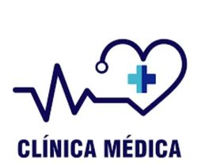

Satisfacer de manera eficaz y eficiente las necesidades de cuidad de
salud de la comunidad. Brindar a toda la comunidad la mejor atención
medica basada en la evidencia científica y contenido ético, acompañando
al paciente y su familia.
Colaborar con la Educación del paciente, su familia y la sociedad, brindando cuidado y promoción de actitudes saludables. Garantizar la revisión y actualización de los conocimientos, procesos, tecnologías y estructuras, gestionando nuestros recursos con racionalidad económica de forma transparente y honesta.
Brindar atención médica de excelencia, con calidez, a través de un equipo de salud comprometido con la capacitación y la innovación tecnológica, cumpliendo con los mas altos estándares de calidad y seguridad y logrando la máxima satisfacción de los pacientes.
